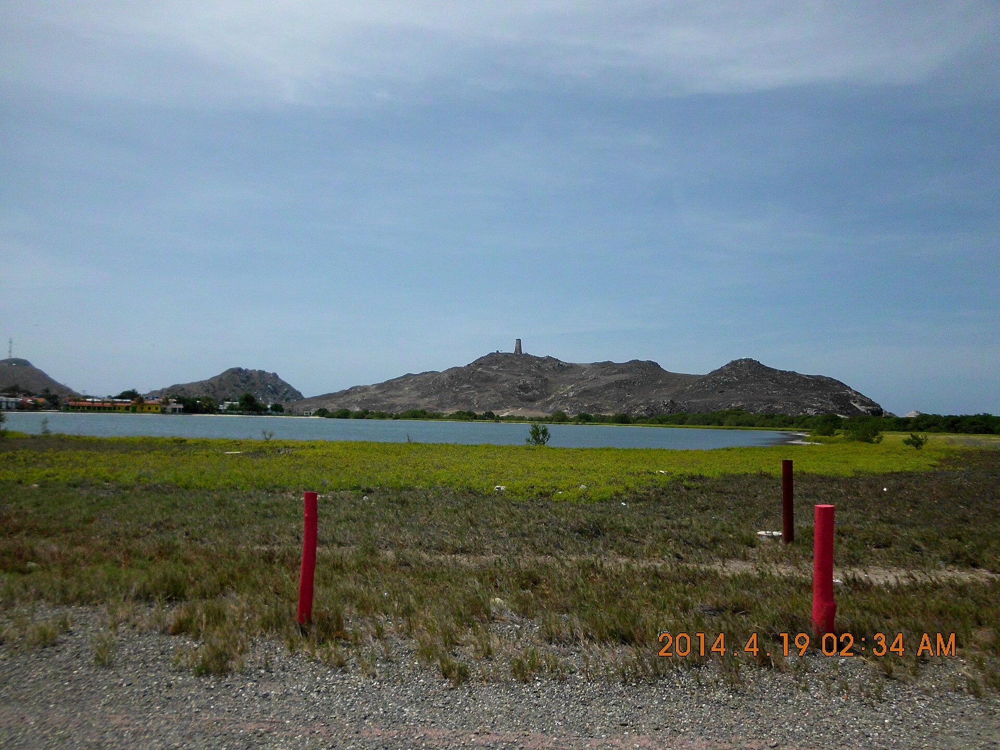
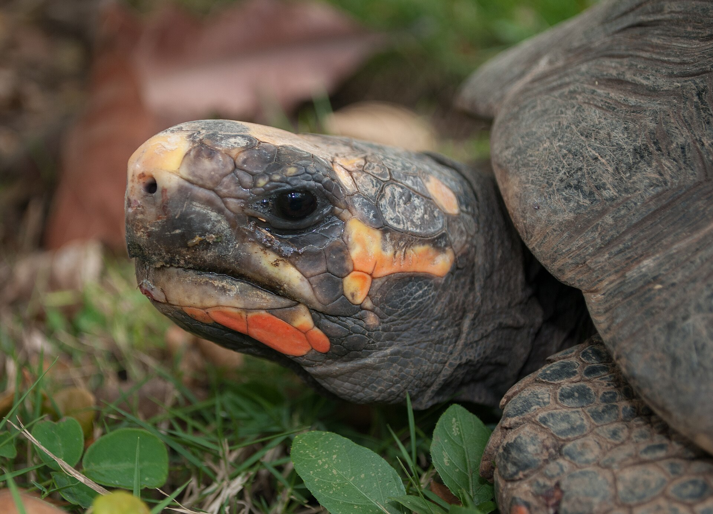
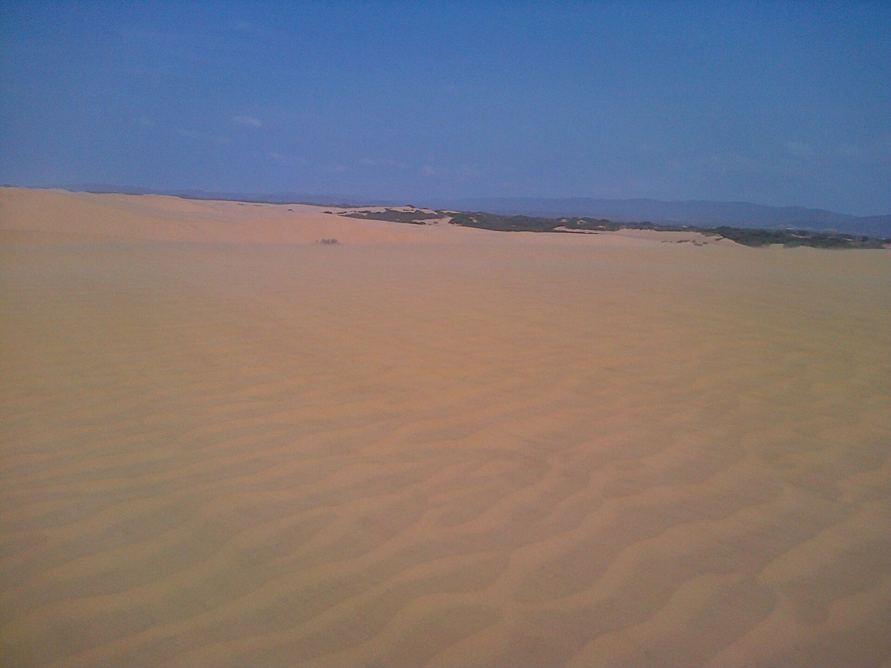

Nuestros alojamientos por destino
Colaboramos con posadas, campamentos y hoteles en los principales
destinos de ecoturismo de Venezuela. Cada tarjeta muestra una opción
verificada con su ubicación, capacidad, precio referencial y desayuno.
Los precios se expresan en dólares estadounidenses (USD)
por noche por habitación estándar y son referenciales;
la tarifa final se confirma al reservar según temporada y disponibilidad.
Alojamientos destacados

Waku Lodge
Gran Sabana, BolÃvar
Eco-lodge en el Parque Nacional Canaima, junto a la laguna de Canaima
y con vista a los tepuis. Ideal para visitar el Salto Ãngel.
Habitaciones con baño privado, hamacas y comedor con vista al Auyán-tepui.
120 USD / noche
Desayuno incluido
Más información

Campamento Canaima
Parque Nacional Canaima, BolÃvar
Campamento rústico a orillas de la laguna, base para la excursión
al Salto Ãngel en curiaro. Ofrece alojamiento en cabañas de palmiche.
Cocina comunitaria, zona de hamacas, excursiones guiadas incluidas.
85 USD / noche
Desayuno incluido
Más información

Posada Los Andes
Mérida, Mérida
Posada de montaña a 10 minutos del Teleférico MukumbarÃ. Habitaciones
con chimenea, desayuno andino y guÃas para Pico BolÃvar.
Calefacción, Wi-Fi, traslado al teleférico incluido.
95 USD / noche
Desayuno incluido
Más información

Posada Gran Roque
Los Roques, Falcón
Posada frente al mar en el Gran Roque, con acceso directo a la playa
y embarcaciones para snorkel en los cayos vecinos.
Aire acondicionado, agua dulce, menú de pescado fresco.
150 USD / noche
Desayuno incluido
Más información

Posada Morrocoy
Tucacas, Falcón
Posada a orillas del Parque Nacional Morrocoy, con lancha privada
para visitar Cayo Sombrero, Cayo Sal y Playuela.
Piscina, restaurante con vista al mar, kayak incluido.
110 USD / noche
Desayuno incluido
Más información

HospederÃa Los Médanos
Médanos de Coro, Falcón
Alojamiento en el borde del parque, con paseos en camello y sandboard
por las dunas de hasta 30 metros de altura.
Habitaciones climatizadas, observación de estrellas guiada.
75 USD / noche
Desayuno no incluido
Más información
Tabla comparativa de alojamientos
| Alojamiento |
Ubicación / Estado |
Tipo |
Capacidad |
Precio / noche |
Desayuno |
| Waku Lodge |
Gran Sabana, BolÃvar |
Eco-lodge |
4 personas |
120 USD |
Incluido |
| Campamento Canaima |
Parque Nacional Canaima, BolÃvar |
Campamento rústico |
6 personas |
85 USD |
Incluido |
| Posada Los Andes |
Mérida, Mérida |
Posada de montaña |
4 personas |
95 USD |
Incluido |
| Posada Gran Roque |
Los Roques, Falcón |
Posada frente al mar |
2 personas |
150 USD |
Incluido |
| Posada Morrocoy |
Tucacas, Falcón |
Posada costera |
4 personas |
110 USD |
Incluido |
| HospederÃa Los Médanos |
Médanos de Coro, Falcón |
HospederÃa desierto |
4 personas |
75 USD |
No incluido |
| Eco Lodge Catatumbo |
Lago de Maracaibo, Zulia |
Eco-lodge |
2 personas |
90 USD |
Incluido |
| Cabañas Los Caracas |
Playa Los Caracas, La Guaira |
Cabañas costeras |
6 personas |
80 USD |
Incluido |
| Rancho Terepaima |
Elorza, Apure |
Rancho / Finca |
8 personas |
100 USD |
Incluido |
| Posada Selva Nublada |
Henri Pittier, Aragua |
Posada selva |
4 personas |
70 USD |
No incluido |